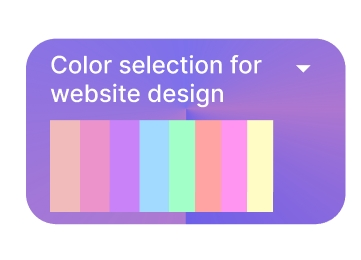
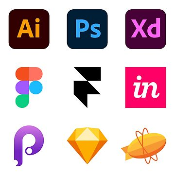

Destar_UI
Home
(current)
About
Contact
Welcome to a World Where Creativity Meets Functionality


UI/UX design tips and useful information to know as a designer
Learn UI design from Zero to hero
Steps to your Ux career
Marketing in UI/UX design
Landing Your First Gig as a designer